In diesem Kapitel erhalten Sie eine Übersicht über die Vermaßung von Werkzeugen.
Werkzeugtypen
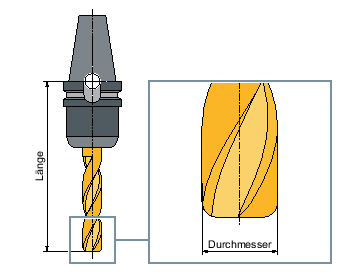Schaftfräser (Typ 120)
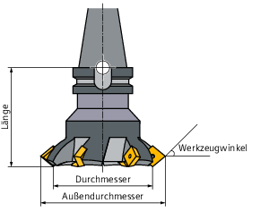Planfräser (Typ 140)
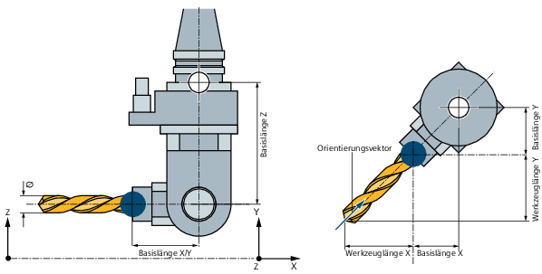Winkelkopffräser (Typ 130)
Das folgende Beispiel erläutert die relevanten Parameter für den Winkelkopffräser:
Vektor = (x,y,z)
Basislänge Z, z. B. $TC_DP21-23[n] = (100,100,200)
Werkzeuglänge z. B. $TC_DP3-5[n] = (50,150,0)
Orientierungsvektor, z. B. $TC_DPV/N3-5[n] = (1,1,0)* relevant für Orientierungsfunktionen und PMM
| Hinweis |
Für die automatische Erzeugung der Werkzeugschutzbereiche (Kollisionsvermeidung) gilt:
|
Bohrer (Typ 200)
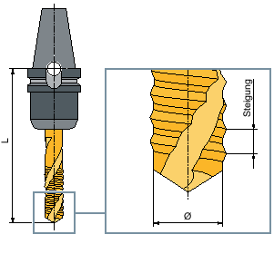Gewindebohrer (Typ 240)
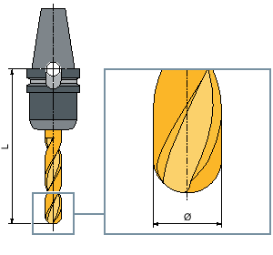3D-Werkzeug am Beispiel eines zylindrischen Gesenkfräsers (Typ 110)
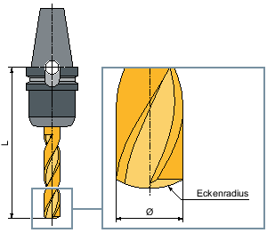3D-Werkzeugtyp am Beispiel eines Kugelkopffräsers (Typ 111)
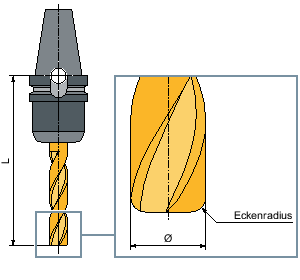3D-Werkzeug am Beispiel eines Schaftfräsers mit Eckenverrundung (Typ 121)
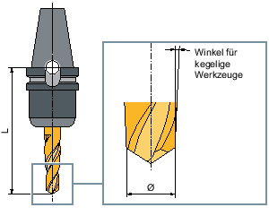3D-Werkzeugtyp am Beispiel eines Kegelstumpffräsers (Typ 155)
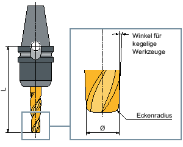3D-Werkzeug am Beispiel eines Kegelstumpffräsers mit Eckenverrundung (Typ 156)
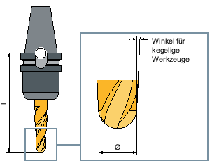3D-Werkzeug am Beispiel eines kegeligen Gesenkfräsers (Typ 157)
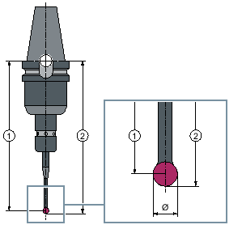① | Länge m |
② | Länge u |
3D-Messtaster

Winkelkopfadapter
L1, L2, L3 sind Offset Geometrielängen.
| Hinweis |
Ein elektronischer Werkstückmesstaster muss vor dem Einsatz kalibriert werden. |